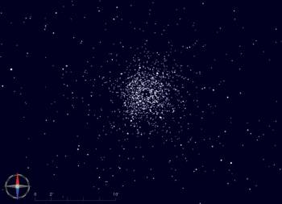

The UCAC3 star catalog was published by USNO at the end of august 2009.
Its main characteristics are:
From this characteristics a catalog is build for use with Skychart software.
The information for each star include: identifier, RA, Dec, aperture magnitude, proper motion, approximate color index (from SuperCosmos B and R2).
To solve the problem with the missing bright stars it not include any star present in Tycho2 catalog or any star brighter than magnitude 10. This implies you must always activate the Tycho2 at the same time with this catalog.
To use this catalog start by getting the part you need from the download catalogs page.
It is split in three part so you can get only the zone visible from your area.
A fourth file ucac3-index.zip contain the optional search index for all the zones.
Each file is about 500 MB is size.
Extract all this zip under ciel\cat or share/skychart/cat. As each file is autonomous there is two common file on each, when prompted for replacement you can respond yes or no without effect.
Then from Skychart open the menu Setup -> Catalog, click the Add button and select the file 3uc.hdr. Click on the first column to make it green
Then open the Cdc Stars section to activate Tycho2 and disable the GSC. Do not forget to save the default options.
My preferred star catalog setting for general use is now:
| Catalog | Field number | Field degrees |
|---|---|---|
| Bright Star | 0 - 10 | 0 - 360 |
| Tycho 2 | 0 - 6 | 0 - 45 |
| 3UC | 0 - 3 | 0 - 5 |
If you have a copy of the UCAC3 DVD you can use Catgen to build your own catalog from the original data files. This allow you to include more or less information for each star depending on your needs.
You must first convert the binary data on the DVD to ASCII text files using the include u3read program or my u3conv program.
The advantage of u3conv is it process all the files at a time and add the star identifier and the color index after the other data. There is also a switch to filter or not the Tycho2 and bright stars.
You can download u3conv for Windows and Linux or get the source code. Run the program in a console to show the syntax help.
Then use Catgen to convert the text files to a binary catalog optimized for chart display. You can start by loading the project file used for the standard catalog.
Use a snapshot more recent than skychart-3.1-1232 as I correct a few bug with Catgen.
{kind=link}